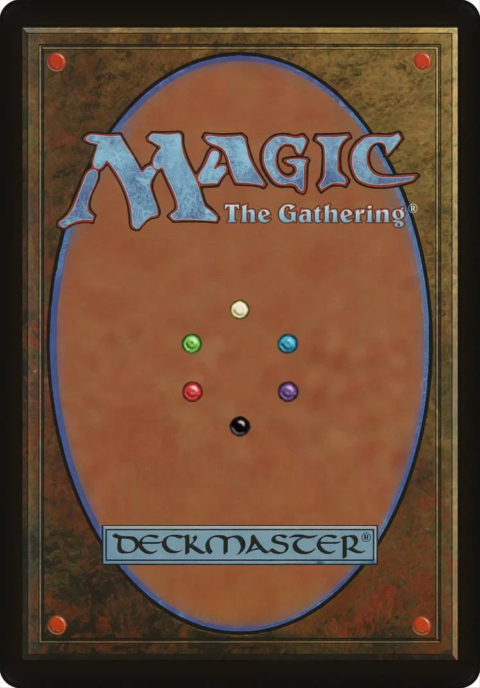

<div class="container ">
  <div class="row">
    <div class="col-3"></div>
    <div class="col-6 bg-dark p-5 border border-3 border-danger m-3">

      <div id="carouselExampleIndicators" class="carousel slide" data-bs-ride="carousel">
        <div class="carousel-inner">
          <div class="row mt-3">
            <div class="carousel-item active">
              <div class=" col-8 ms-5 ps-5">
                <a routerLink="/carta/id/624f399388e7337f79db5c4b">
                  
                </a>
              </div>
            </div>
            <div class="carousel-item" *ngFor="let carta of Carusel">
              <div class="col-8 ms-5 ps-5" *ngIf="carta.image_uris; else reverso;">
                <a routerLink="/carta/id/{{carta._id}}">
                  
                </a>
              </div>
            </div>
          </div>
        </div>
        <button class="carousel-control-prev" type="button" data-bs-target="#carouselExampleIndicators" data-bs-slide="prev">
          <span class="carousel-control-prev-icon" aria-hidden="true"></span>
          <span class="visually-hidden">Previous</span>
        </button>
        <button class="carousel-control-next" type="button" data-bs-target="#carouselExampleIndicators" data-bs-slide="next">
          <span class="carousel-control-next-icon" aria-hidden="true"></span>
          <span class="visually-hidden">Next</span>
        </button>
      </div>
    </div>
  </div>
</div>

<ng-template #reverso>
  <div class="ms-5 ps-5 col">
    
  </div>
</ng-template>